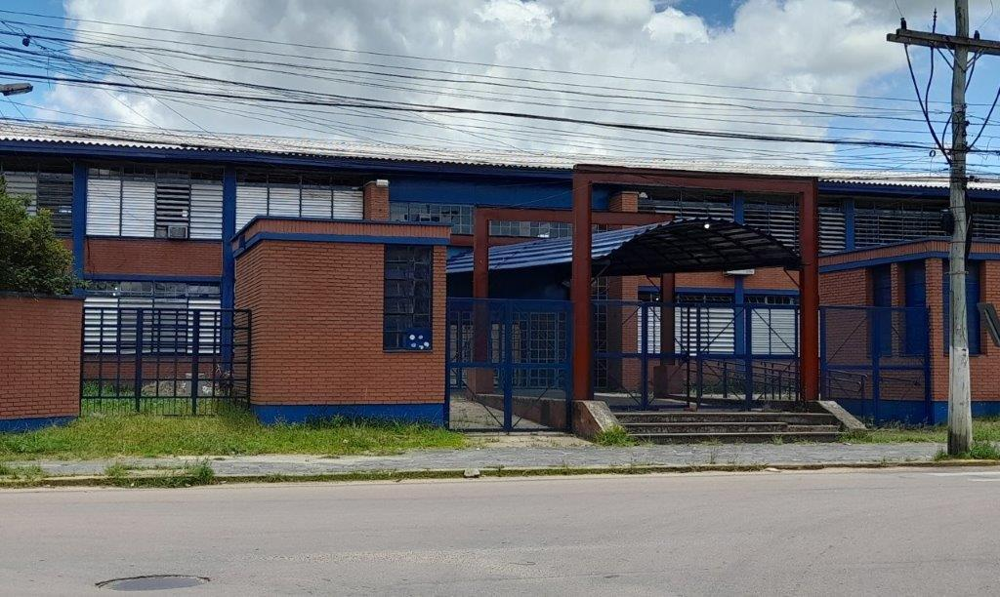

Lorenzo Pereira
Junior Developer
Junior Developer
I am a developer in constant evolution, with a solid foundation that began in a Technical High School program in Information Technology and is currently being deepened through my Biomedical Informatics degree at UFCSPA. My journey is driven by a curiosity to understand how technology can transform complex sectors. I focus primarily on Java and Web Development, always striving to apply the best practices in logic and code organization. I believe that continuous learning and constant practice are the keys to building software solutions that truly create an impact.

My journey in technology began at the Instituto Estadual de Educação Solon Tavares, where I completed a two-year Technical Program in Information Technology. It was a period of total immersion, building a solid foundation by merging theory and practice. During the course, I explored the full development cycle—from Programming Logic and OOP (Object-Oriented Programming) with Java and Databases to creating modern solutions for Web and Mobile. Beyond the technical side, the curriculum included Technical English, which is essential for my growth as a developer in a global market.
Currently, I am expanding my technical horizons through my degree in Biomedical Informatics at UFCSPA. This multidisciplinary program combines the rigor of Healthcare with the innovative power of Technology. Although still in training, my academic path has already provided me with the mastery of indispensable concepts for high-level software development. I have significantly deepened my knowledge of Programming Logic and OOP. At the moment, I am focusing my studies on Software Engineering and Database Systems, seeking to understand not only how to code, but how to architect scalable and efficient systems that meet the demands of complex sectors.